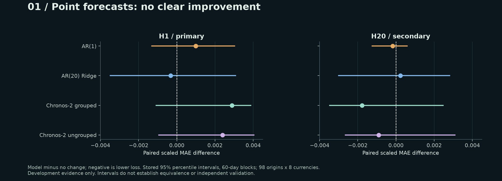
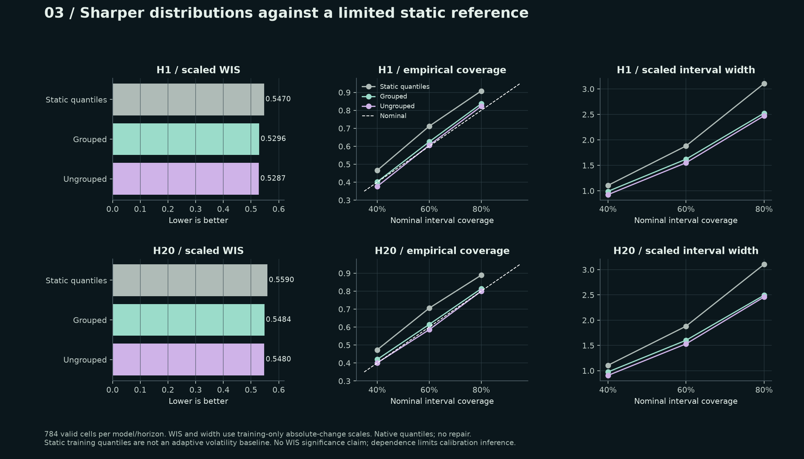
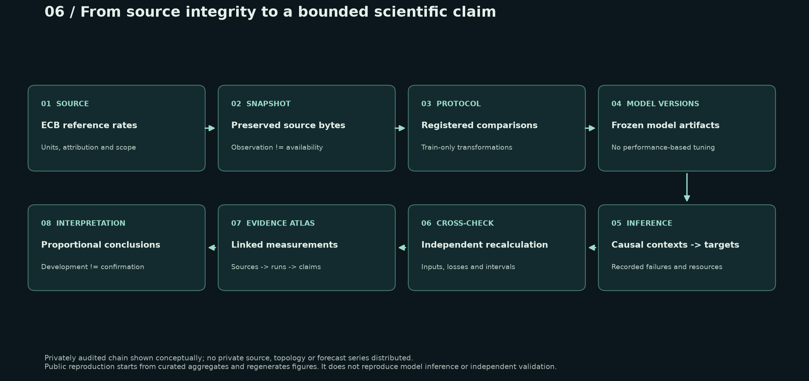

A frozen comparison of no change, autoregressive baselines and Chronos-2. Point forecasts do not clearly improve; probabilistic forecasts warrant a narrower interpretation.
Ridge has a small descriptive advantage at H1; grouped Chronos-2 has one at H20. Every model-versus-no-change uncertainty interval includes zero. The direction changes with the horizon, and the observations are dependent. This is neither a demonstration of equivalence nor independent validation.
H1 performance and paired differences. Negative differences indicate lower loss.
Variant
Scaled MAE
Difference
Stored 95% interval / L60
Cells
No change
0.731174
Reference
—
784
AR(1)
0.732169
+0.000995
[-0.001310, +0.003021]
784
AR(20) Ridge
0.730850
-0.000324
[-0.003484, +0.003079]
784
Chronos-2 grouped
0.734064
+0.002890
[-0.001078, +0.003871]
784
Chronos-2 ungrouped
0.733566
+0.002392
[-0.000947, +0.004037]
784
Each origin contributes an equally weighted eight-currency panel. The interval endpoints are loaded from stored research outputs; the page performs no bootstrap or hypothesis test.

Figure 1. Point forecasts against no change. Paired mean differences in scaled absolute loss; negative values favour the model. H1 is primary; H20 is secondary. Stored 95% percentile intervals use 60-observation-day moving blocks with the original sampling mask and common indices across currencies. Each comparison includes 98 origins and eight currencies. All eight intervals include zero: four H1 contrasts at the primary horizon and four H20 contrasts at the secondary horizon.
A fixed calendar partition exposes heterogeneity without selecting favourable episodes. Quarter-level means are descriptive views of the same exposed sample, not additional independent experiments.
Figure 2. A complete failure landscape. Mean paired scaled absolute-loss differences, partitioned by forecast-origin calendar quarter. Every quarter from 2018 Q1 through 2019 Q4, all eight currencies and all four nonzero models are included. Cell counts are shown; 2019 Q4 is partial. A single symmetric colour scale is shared by every panel. This is descriptive aggregation, not subgroup testing. The SVG is hybrid: vector text and axes with eight inline PNG heatmaps and one inline PNG colour bar; it has no external image dependency.
Chronos-2 yields lower WIS than static training quantiles, with narrower intervals and observed 80% coverage closer to nominal. This supports a limited descriptive comparison. It does not show that pretraining outperforms simpler adaptive distributional methods, which were not evaluated here.

Figure 3. Distribution quality against a limited reference. Scaled weighted interval score (WIS), observed coverage and scaled width for nominal 40%, 60% and 80% central intervals. There are 784 valid cells per model and horizon. Static training quantiles are an unconditional, nonadaptive comparator. Native quantiles are unmodified. No paired WIS significance claim is made; public tables include the stored coverage and width intervals.
There were no native quantile crossings in this real-data development run. Earlier synthetic outputs did exhibit crossings. Ordered quantiles alone do not establish calibration, and no automatic sorting or repair was applied.
04 / AN ABLATION WITH A FIXED COMPARATOR
No consistent grouping benefit.
Figure 4. Cross-asset grouping. Grouped minus ungrouped Chronos-2 scaled absolute loss, using identical origins, checkpoint, transformations and inputs. Both stored 60-day-block uncertainty intervals include zero. Grouping is not consistently advantageous in this development sample. Marginal forecast quantiles do not specify a joint cross-asset distribution.
Figure 5. The measured cost of complexity. Complete fit-plus-run component walltime, sampled worker peak RSS and completed origin jobs for the five primary variants. All completed 98 jobs without failures. Measurements include model loading and I/O; the host was not exclusive. CPU budget reservations and estimated quantities are not plotted as measured CPU time. Auxiliary and verification costs are outside this five-variant chart.
ECB rates are units of each currency per EUR. The target is the single-session log change multiplied by 10,000. H20 is the change on the twentieth future observation day, not a cumulative twenty-day return.
Scales are fixed on 1999–2017. Models and preprocessing were frozen before this run. Chronos-2 supplies its median, not a conditional mean. The static reference supplies training-only empirical quantiles.
Dependence-aware diagnostics
Stored moving-block percentile intervals use 2,000 shared resamples over the complete eligible daily calendar, carrying the sampled-origin mask. The primary block length is 60 observation days; 20 and 120 are fixed diagnostics.
The 98 origins follow a systematic five-observation-day grid. Eight EUR-quoted series and overlapping contexts do not yield independent observations. Quarter panels use forecast-origin quarters; the final quarter is partial.
Exposure and information limits
This is development evidence, not an untouched holdout.
Three origins had appeared in a preceding technical pilot.
Foundation-model pretraining overlap is unknown.
Latest-vintage reference rates do not establish historical release availability.
ECB reference rates are not executable transaction prices.
Claims deliberately bounded
No independent generalization, alpha or profit claim.
No economic benefit, implementation costs or portfolio study.
No additional model selection or new hypothesis testing.
No inference for the reserved later transfer period.
The wider benchmark is incomplete; MOMENT and Mamba4Cast were not run.
Source: European Central Bank. Log transformations, scaling, model forecasts and statistics are calculations by this research project. No ECB or model-provider endorsement.
07 / REPRODUCIBILITY & EVIDENCE
Recreate the figures. Inspect the limits.

Figure 6. From provenance to a bounded claim. An original conceptual rendering of the privately audited evidence chain. Public reproduction begins at curated aggregates and regenerates charts; it cannot verify private source bytes, refit models or recreate forecasts. Repeated scoring of frozen predictions is not a new test sample or independent empirical validation.
The public renderer consumes only the supplied aggregates. It reproduces chart geometry and displayed numbers, not source acquisition, training, inference or independent numerical verification of private observations. The private study reports independent recalculation and byte-identical rescoring of frozen predictions; those remain reported engineering checks rather than public empirical replication.
Bracher, J., Ray, E. L., Gneiting, T. and Reich, N. G. (2021). Evaluating epidemic forecasts in an interval format. PLOS Computational Biology, 17(2), e1008618. The study uses its explicitly specified finite interval grid; it does not claim exact CRPS.
Matplotlib for original scientific figures; DejaVu Sans for plot typography. No external chart image, logo or remote font is embedded.
Release 2.1 · ECB-derived FX development evidence only. P1 remains not activated. No EODHD-derived case study, results or figures are included.
![Figure 2. Mean paired scaled absolute-loss differences, partitioned by forecast-origin calendar quarter. Every quarter from 2018 Q1 through 2019 Q4, all eight currencies and all four nonzero models are included. Cell counts are shown; 2019 Q4 is partial. A single symmetric colour scale is shared by every panel. This is descriptive aggregation, not subgroup testing. The SVG is hybrid: vector text and axes with eight inline PNG heatmaps and one inline PNG colour bar; it has no external image dependency.](research/fx-development/figures/F2-failure-landscape.png)